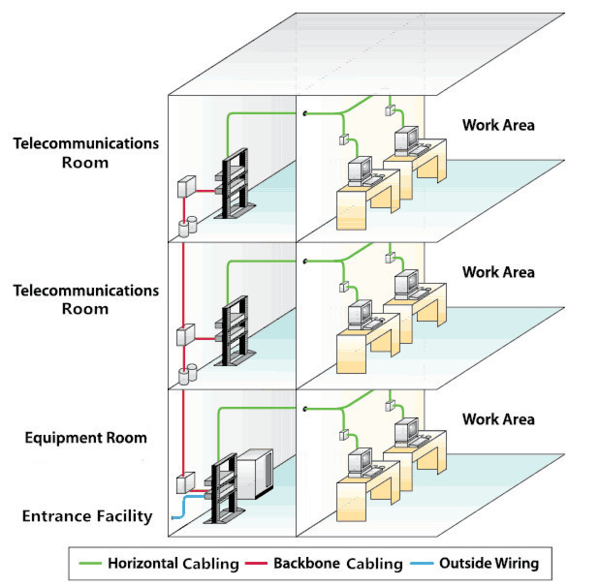
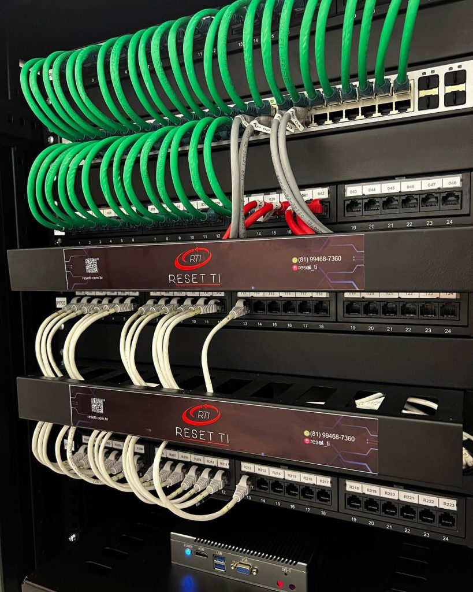

O que é Cabeamento Estruturado?
Cabeamento estruturado é uma abordagem padronizada e organizada para a infraestrutura de cabos de rede em edifícios, projetada para suportar múltiplas aplicações de telecomunicações, como voz, dados e vídeo, de forma flexível e eficiente. Ele se baseia em um conjunto de normas técnicas internacionais (como a TIA/EIA-568) que definem a disposição, instalação e gerenciamento dos componentes da rede.
Componentes do Cabeamento Estruturado
Os principais componentes de um sistema de cabeamento estruturado incluem:
- Cabos: Geralmente cabos de par trançado (UTP - Unshielded Twisted Pair) com conectores RJ-45, ou fibra óptica para maiores distâncias e larguras de banda.
- Patch Panels: Painéis de conexão que organizam e gerenciam as terminações dos cabos, facilitando a conexão e reconfiguração da rede.
- Racks: Estruturas metálicas para organizar e proteger os equipamentos de rede, como patch panels, switches e servidores.
- Patch Cords: Cabos curtos utilizados para conectar equipamentos dentro dos racks ou da área de trabalho.
- Tomadas RJ45: Pontos de conexão nas áreas de trabalho para dispositivos como computadores e telefones.
- Guia de Cabos: Acessórios para organizar e rotear os cabos dentro dos racks, evitando emaranhados.
- DIO (Distribuidor Interno Óptico): Utilizado para organizar e proteger as terminações de fibra óptica.
O sistema é dividido em subsistemas como cabeamento horizontal (da tomada à sala de telecomunicações) e cabeamento backbone (interligando salas de telecomunicações e edifícios).
Vantagens do Cabeamento Estruturado
O cabeamento estruturado oferece diversas vantagens, incluindo:
- Flexibilidade e Escalabilidade: Facilita a adição, remoção ou movimentação de equipamentos e usuários, adaptando-se às necessidades futuras da empresa.
- Confiabilidade: Reduz a probabilidade de falhas e interferências, garantindo um desempenho de rede mais estável e consistente.
- Facilidade de Gerenciamento: A organização padronizada simplifica a identificação de problemas, manutenção e reconfiguração da rede.
- Suporte a Múltiplas Aplicações: Permite a transmissão de voz, dados e vídeo sobre a mesma infraestrutura, eliminando a necessidade de redes separadas.
- Redução de Custos: Embora o investimento inicial possa ser maior, a longo prazo, o cabeamento estruturado diminui os custos de instalação, operação e manutenção devido à sua eficiência e durabilidade.
- Melhor Desempenho da Rede: Um sistema bem planejado e executado pode aumentar significativamente a velocidade e a eficiência da transmissão de dados.
Melhores Práticas de Instalação
Para garantir uma implementação eficiente e duradoura do cabeamento estruturado, é fundamental seguir as melhores práticas durante todo o processo de instalação:
1. Planejamento Detalhado
- Análise profunda dos requisitos atuais e futuros da rede
- Identificação de áreas críticas e pontos de acesso estratégicos
- Escolha de padrões de cabo adequados (Cat 6a ou Cat 7)
- Layout físico otimizado para dispositivos
2. Componentes de Qualidade
- Utilização de cabos de alta qualidade e conectores confiáveis
- Painéis de conexão bem projetados e racks organizados
- Uso de cabos blindados para reduzir interferência eletromagnética
- Componentes dimensionados para suportar expansões futuras
3. Instalação Adequada
- Uso de ferramentas profissionais (certificadores de cabos, alicates de crimpagem)
- Separação adequada entre cabos de dados e energia
- Evitar curvas excessivas que podem afetar o sinal
- Rotulação clara e documentação detalhada
4. Testes e Certificação
- Verificação da integridade de todo o cabeamento
- Testes de performance e qualidade conforme normas
- Certificação técnica antes da operação
- Validação do funcionamento de todos os pontos
Normas Técnicas Importantes
É essencial seguir as normas técnicas reconhecidas internacionalmente:
- ANSI/TIA-568: Requisitos para cabeamento estruturado em edifícios comerciais
- ISO/IEC 11801: Requisitos para instalação e desempenho de sistemas
- NBR 14565: Padrão brasileiro para instalação de sistemas em edifícios comerciais
- TIA-942: Padrão para infraestrutura de Data Centers
Manutenção e Solução de Problemas
A manutenção adequada do cabeamento estruturado é essencial para garantir o desempenho contínuo e a confiabilidade da rede. Conhecer os problemas mais comuns e suas soluções pode evitar interrupções custosas:
Importância da Manutenção Regular
- Segurança da Informação: Previne falhas de segurança e vazamentos de dados
- Desempenho da Rede: Evita lentidão, aumento de latência e quedas de conexão
- Custo-Benefício: Reduz custos a longo prazo evitando reparos extensivos
- Conformidade Regulatória: Atende padrões de desempenho e segurança exigidos
Problemas Mais Comuns
1. Interferência Eletromagnética (EMI)
- Causas: Motores elétricos, ar condicionado, iluminação fluorescente
- Sintomas: Sinal fraco e instável, perda de conectividade
- Soluções: Usar cabos blindados, manter distância de fontes de energia
2. Crosstalk (Diafonia)
- Causas: Interferência entre sinais de cabos próximos
- Sintomas: Erros de transmissão, lentidão na rede
- Soluções: Usar cabos de categoria superior, manter separação adequada
3. Perda de Sinal
- Causas: Cabos de baixa qualidade, comprimentos excessivos
- Sintomas: Degradação da qualidade de transmissão
- Soluções: Usar cabos certificados, respeitar distâncias máximas
Práticas de Manutenção Preventiva
- Inspeções Regulares: Verificação visual dos cabos e conectores
- Testes de Performance: Medição de velocidade e integridade do sinal
- Documentação: Manutenção de registros detalhados e rotulagem clara
- Limpeza: Remoção regular de poeira e contaminantes
Ferramentas Essenciais
- Testadores de Cabo: Verificam continuidade e mapeamento
- Certificadores de Rede: Testam performance completa
- Analisadores de Protocolo: Monitoram tráfego e identificam problemas
- Software de Monitoramento: Sistemas de alerta automático
Estudos de Caso de Sucesso
Conheça exemplos reais de implementações bem-sucedidas de cabeamento estruturado em diferentes tipos de organizações e os resultados alcançados.
IFMG Barbacena - Instituto Federal
Instituição EducacionalInterligar 13 prédios em um campus de grande extensão territorial sem sistema de comunicação eficaz entre eles.
Implementação de cabeamento estruturado com um rack por prédio, utilizando infraestrutura aparente com canaletas e tubulações.
- Comunicação eficiente entre todos os prédios
- Redução significativa nos custos de manutenção
- Facilidade para mudanças de layout
- Suporte a múltiplas aplicações (dados, telefonia, CFTV)
- Implementação gradual conforme orçamento disponível
Rotesma - Indústria de Pré-Moldados
Setor IndustrialModernização da infraestrutura de rede industrial com necessidade de alta confiabilidade para processos críticos.
Cabeamento estruturado industrial com sistema de monitoramento avançado e integração com automação.
- Melhoria na confiabilidade da rede industrial
- Redução de paradas não programadas
- Facilidade de manutenção e troubleshooting
- Preparação para Indústria 4.0
Projeto Creare - Sistema Integrado
Edifício ComercialIntegração completa de múltiplos sistemas em um único cabeamento estruturado.
Sistema unificado suportando dados, telefonia, CFTV, alarme, controle de acesso e automação predial.
- Integração completa de todos os sistemas
- Gerenciamento centralizado
- Redução de custos de manutenção
- Maior segurança e controle
Data Center Corporativo
Alta TecnologiaCabeamento de alta densidade para data center com requisitos de 99.99% de disponibilidade.
Fibra óptica de alta performance, patch panels modulares, redundância total e monitoramento em tempo real.
- 99.99% de disponibilidade alcançada
- Redução de 40% no tempo de troubleshooting
- Expansão sem interrupções
- Conformidade com padrões internacionais